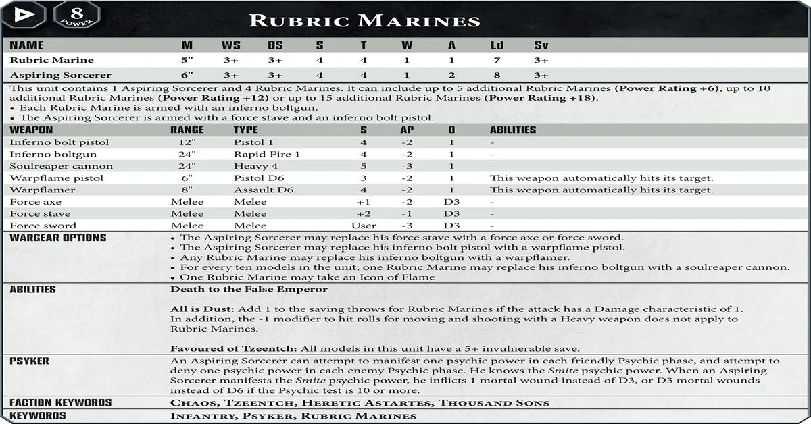

datasheet rules
There is a set of universal rules for datasheets in Warhammer and that isYou must include at least one Character. This Character is now your Warlord. You can only include one of each named Epic Hero You can only include up to three units of each datasheet You can include up to six units of each datasheet with the Battleline or Dedicated Transport keywords Each Character can only have one Enhancement. You can’t include more than three Enhancements in total, and they must all be different.
